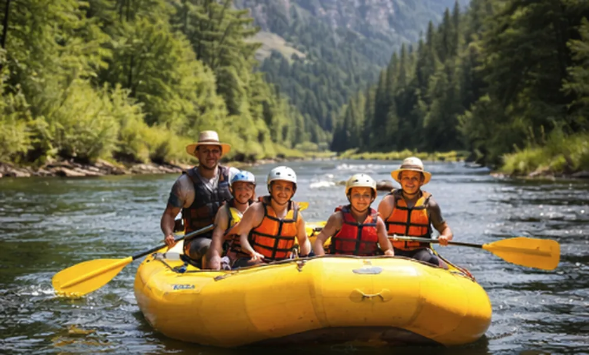
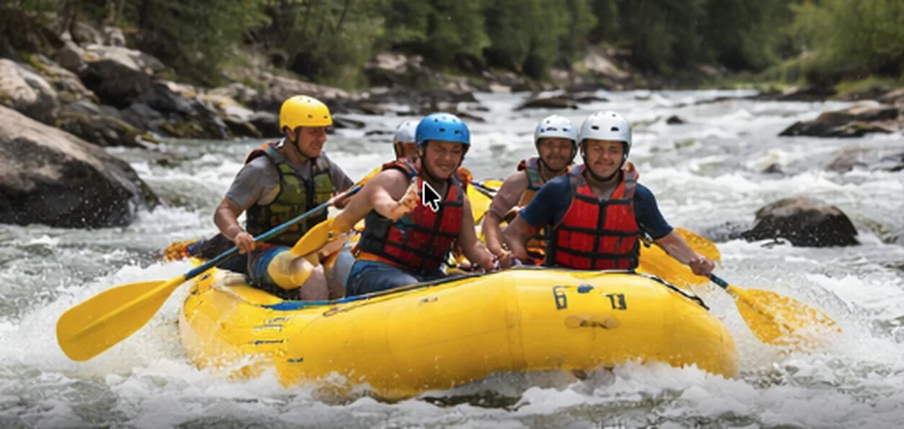
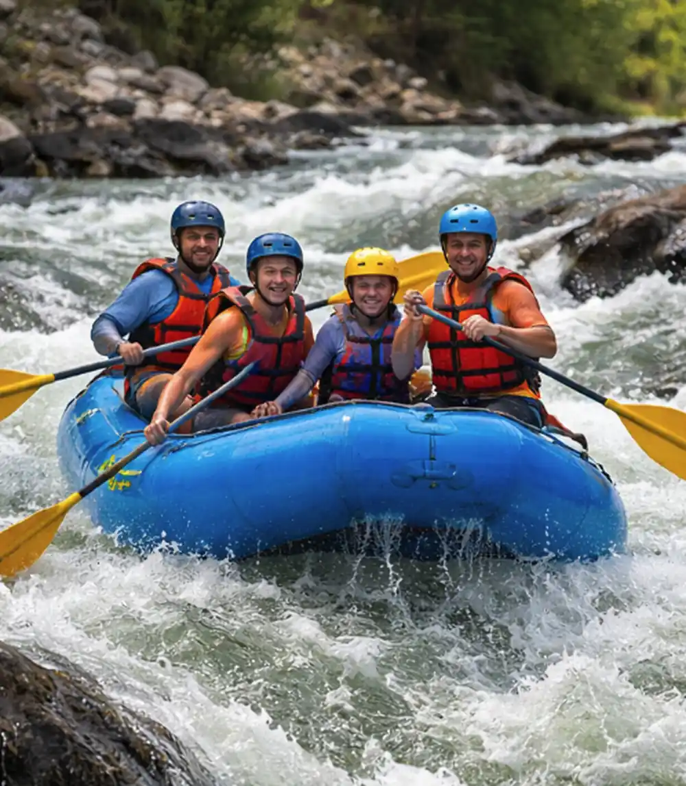

Beginner Scenic Float
Perfect for families and first-time rafters, this relaxing trip offers a gentle introduction to the beauty of the Snake River. Enjoy calm waters, stunning canyon views, and opportunities to spot wildlife along the shoreline.

Intermediate Adventure Run

For those looking for a bit more excitement, this trip delivers the perfect balance of thrill and control. Navigate moderate rapids while enjoying stretches of calm water and beautiful scenery.
Advanced Whitewater Challenge
Designed for experienced rafters and thrill-seekers, this high-adrenaline trip tackles powerful rapids with fast currents and steep drops. A truly unforgettable adventure.

| Summary | ||||
|---|---|---|---|---|
| Trip Name | Duration | Difficulty Level | Minimum Age | Price per Person |
| Beginner Scenic Float | 2 hours | Easy (Class I-II) | 5 years | $45 |
| Intermediate Adventure Run | 4 hours | Moderate (Class II-III) | 10 years | $75 |
| Advanced Whitewater Challenge | 6 hours | Advanced (Class III-IV) | 16 years | $120 |